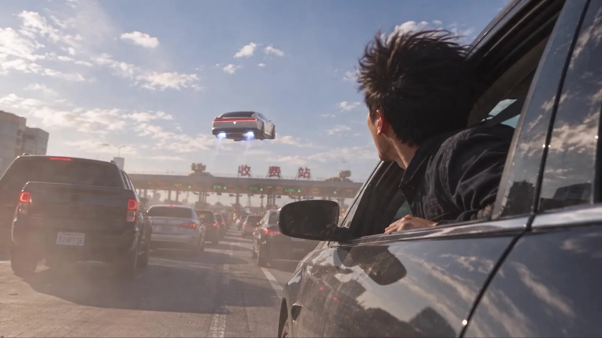
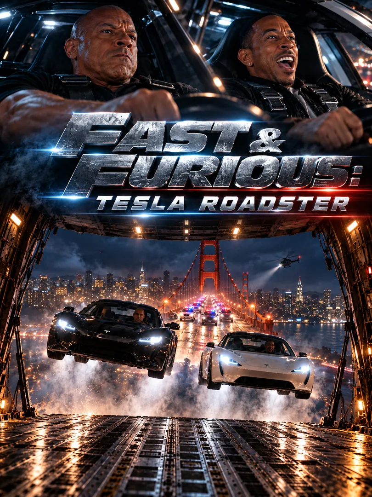

观看短片观看完整短片00:18AI 荒诞短片
堵车？直接飞过去。
Tesla Roadster · An unexpected detour
个人独立创作 · 抖音 AI 影像
鳄梨AI
YueVisuals / AI FilmmakingUnexpected ideas. Cinematic stories.
把日常推向想象，
让一个出乎意料的瞬间，长成一支短片。
两支精选短片
2026 / 01—02
观看短片观看完整短片00:18Tesla Roadster · An unexpected detour

观看短片观看完整短片01:31Fast & Furious: Tesla Roadster
创作笔记
从一个设定，到一段完整体验。
叙事 / 镜头 / 节奏01 / 特斯拉 Roadster 创意视频
以 Roadster 飞越堵车开场，用中国收费站的荒诞反转制造笑点。一个熟悉的出行烦恼，被推向意料之外的结局。
让飞行的爽感与收费站的现实感形成反差。用短促的铺垫、清晰的镜头信息和结尾反转，把汽车话题转化为易于分享的 AI 短片。
02 / FAST & FURIOUS: TESLA ROADSTER
以《速度与激情》的动作片语汇重新想象 Tesla Roadster，通过 AI 影像构建角色、车辆与动作场景。
从角色反应到车辆运动，再到大场面的节奏推进，用镜头衔接、剪辑和声音构成完整的概念预告。非官方创意演绎，呈现个人对动作影像的探索。
继续探索
AI 叙事、品牌影像与新的视觉可能。